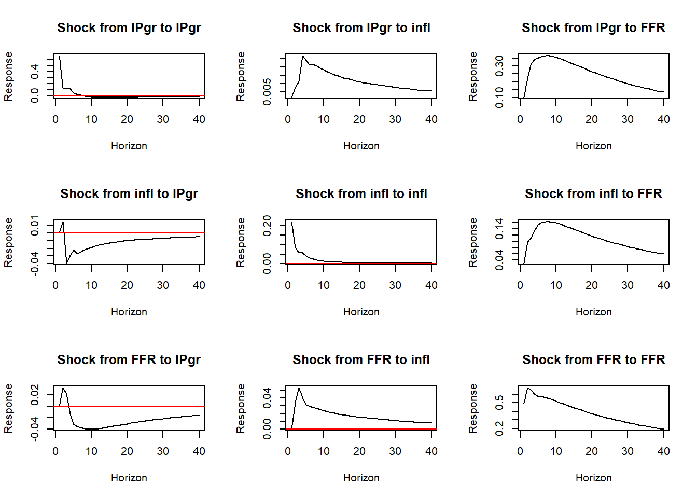
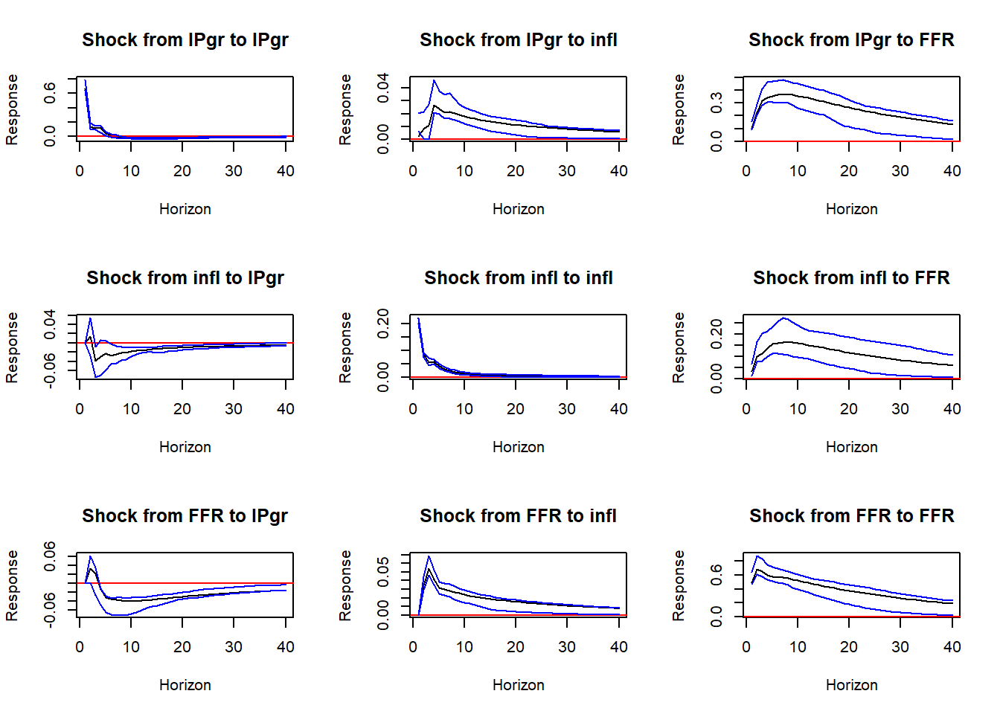

library(vars)
library(svars)
library(tsutils)
library(xts)
library(dplyr)
library(expm)
library(matrixStats)
dta<- read.csv(url("https://github.com/AndresMtnezGlez/heptaomicron/raw/main/ex1data.csv"))Replicating Christiano, Eichenbaum and Evans (1998): Monetary Policy Shocks in a VAR
VAR
SVAR
monetary policy
macroeconometrics
impulse response
replication
R
A step-by-step replication in R of Christiano, Eichenbaum and Evans (1998), estimating a three-variable VAR in output growth, inflation and the Federal Funds Rate, with reduced-form SUR estimation, recursive identification and impulse response functions to a monetary policy shock.
In this project we will replicate the results obtained by CEE (1998). This paper starts with neat question: What happens after an exogenous shock to monetary policy?
To so we will run a simplified VAR(p) with three variables as GDP growth, inflation, Federal Funds Rate.
This project borrows heavily on code from Nicolo Maffei and Konstantin Boss. In addition, the conceptual framework is based on the work of Luca Gambetti, Konstantin Boss, Kevin Kotzé and Helmut Lütkepohl.
First, we will need to load the libraries and the data.
1 Reduced form in SUR specification
We start by estimating what is called the reduced form of the VAR. SUR stands for seemingly unrelated regression model with lagged variables and deterministic terms (the constant) as common regressors. For instance, the VAR(1) model with two variables can be expressed as:
\[ \begin{eqnarray}\nonumber {\bf{y}}_{t}= A_{1} {\bf{y}}_{t-1} + {\bf{u}}_{t} \end{eqnarray} \] Which in matrix form cam be shown as:
\[ \begin{eqnarray} {\bf{y}}_{t}=\left[ \begin{array}{c} y_{1,t} \\ y_{2,t} \end{array} \right] , A_{1}=\left[ \begin{array}{cc} \alpha_{11} & \alpha_{12} \\ \alpha_{21} & \alpha_{22} \end{array} \right] \;, {\bf{u}}_{t}=\left[ \begin{array}{c} u_{1,t} \\ u_{2,t} \end{array} \right] \tag{1.2} \end{eqnarray} \] We can imagine we have estimated the parameters of matrix A as:
\[ \begin{eqnarray} \left[ \begin{array}{c} y_{1,t} \\ y_{2,t} \end{array} \right] = \left[ \begin{array}{cc} 0.5 & 0.3 \\ 1 & 0.2 \end{array} \right] \left[ \begin{array}{c} y_{1,t-1} \\ y_{2,t-1} \end{array} \right] +\left[ \begin{array}{c} u_{1,t} \\ u_{2,t} \end{array} \right] \tag{1.3} \end{eqnarray} \] This can be expressed asseemingly unrelated regression model just by multiplicating the matrices as:
\[ \begin{eqnarray}\nonumber y_{1,t} &=& 0.5y_{1,t-1}+0.3y_{2,t-1}+u_{1,t} \\ y_{2,t} &=& y_{1,t-1}+0.2y_{2,t-1}+u_{2,t} \nonumber \end{eqnarray} \] This set up attractive for two reasons. First, it is easy to see the relationships among the variables and other variables’s lags. Second, it offers us a clear idea of why a VAR(p) can be estimated using plain matrix OLS. It is important to notice that the OLS estimation of the RHS parameters is fine as long as each equation contains the same RHS variables. If not, we would have to opt for numerical methods.
Therefore, the next step is to create a function to lay the data contained in the vector of time series in a SUR fashion. In our mock VAR(1) example with two variables this will look as:
\[ \begin{eqnarray} Y=\left[ \begin{array}{cc} Serie1_{p+1} & Serie2_{p+1} \\ Serie1_{p+2} & Serie2_{p+2} \\ \vdots & \vdots \\ Serie1_{T} & Serie2_{T} \end{array} \right] \;, X=\left[ \begin{array}{cc} 1 & Serie1_{p} & Serie2_{p} & Serie1_{p-1} & Serie2_{p-1}& \cdots & Serie1_{1} & Serie2_{1} \\ 1 & Serie1_{p+1} & Serie2_{p+1} & Serie1_{p} & Serie2_{p}& \cdots & Serie1_{2} & Serie2_{2} \\ \vdots & \vdots & \vdots & \vdots & \vdots & \cdots & \vdots & \vdots \\ 1 & Serie1_{T-1} & Serie2_{T-1} & Serie1_{T-2} & Serie2_{T-2}&\cdots & Serie1_{T-p} & Serie2_{T-p} \\ \end{array} \right] \; \end{eqnarray} \]
We can wrap this in a small function named SUR that will make the job. To implement it we will use the data set for CEE (1998) where the variables are GDP growth, inflation, Federal Funds Rate.
SUR <- function(data_var, p, const=TRUE){
data_var <- as.data.frame(data_var)
T <- as.numeric(nrow(data_var)) #Define the sample size
p_1 <- p +1
Y_initial=as.matrix(slice(data_var, 1:p))
Y = as.matrix(slice(data_var, p_1:T)) #Create Y matrix
if(const == TRUE) {
data_var_X <- as.data.frame(1) #Create vector with the constant
names(data_var_X) <- "const"
} else {
data_var_X <- as.data.frame() #In case there is no constnat
}
for(i in 1:p) { #This loop lags and concatenates the matrix
T <- T-1
data_var_X <- cbind(data_var_X, slice(data_var, p:T))
p <- p-1
}
X = as.matrix(data_var_X)
return(list(Y = Y, X = X, Y_initial=Y_initial))
}2 VAR(p) estimation using OLS
Once we have the data properly structured in SUR fashion, it is fairly easy to implement the OLS estimator in matrix form. To do so, we will use a small function. This function will return us the estimated coefficients (K*P+K = Number of Variables * Number of lags + Number of variables (to account the constant)) .
The OLS estimator can be defined as:
\[ \hat{\Phi} = (X'X)^{-1}X'Y \]
And the covariance matrix as:
\[ \hat{\Omega} = \frac{\hat{e}\hat{e'}}{n-Kp-1} \]
f_VAR <- function(data_var, p, const=TRUE){
SUR_ouptut <- SUR(data_var,p=3)
X <- SUR_ouptut$X
Y <- SUR_ouptut$Y
pi_hat <- round(solve(t(X)%*%X)%*%t(X)%*%Y, digits = 5)
Yfit=X %*% pi_hat #Fitted value of Y
err=Y-Yfit #Residuals
return(list(Y = Y, X = X, pi_hat= pi_hat, Yfit = Yfit, err=err, Y_initial = SUR_ouptut$Y_initial))
}
f_VAR_output <-f_VAR(dta, p=12, const =T)
pi_hat <- f_VAR_output$pi_hat
print(pi_hat) IPgr infl FFR
const 0.39783 0.03081 -0.00396
IPgr 0.19098 -0.00001 0.12092
infl 0.05852 0.38199 0.25718
FFR 0.06717 0.06941 1.37621
IPgr 0.12705 -0.00934 0.08087
infl -0.23339 0.07854 -0.13509
FFR -0.06531 -0.01286 -0.60829
IPgr 0.10444 0.01127 -0.01005
infl -0.02853 0.10894 0.16599
FFR -0.03153 -0.03726 0.208643 From VAR(p) to VAR(1): the Companion Form
It is possible to express a VAR(p) model in a VAR(1) form, which turns out to be very useful in many practical situations (and for some technical derivations). This reformulation is done by expressing the VAR(p) model in the companion-form, which is accomplished as follows.
\[ \begin{eqnarray}\nonumber \left[ \begin{array}{c} {\bf{y}}_{t} \\ {\bf{y}}_{t-1} \\ {\bf{y}}_{t-2} \\ \vdots \\ {\bf{y}}_{t-p+1} \end{array} \right] =\left[ \begin{array}{c} \mu \\ 0 \\ 0 \\ \vdots \\ 0 \end{array} \right] +\left[ \begin{array}{ccccccc} A_{1} & A_{2} & \cdots & A_{p-1} & A_{p} \\ I & 0 & \cdots & 0 & 0 \\ 0 & I & \cdots & 0 & 0 \\ \vdots & \vdots & \ddots & \vdots & \vdots \\ 0 & 0 & \cdots & I & 0 \end{array} \right] \left[ \begin{array}{c} {\bf{y}}_{t-1} \\ {\bf{y}}_{t-2} \\ {\bf{y}}_{t-3} \\ \vdots \\ {\bf{y}}_{t-p} \end{array} \right] + \left[ \begin{array}{c} {\bf{u}}_{t} \\ 0 \\ 0 \\ \vdots \\ 0 \end{array} \right] \end{eqnarray} \]
Which can be translated into code as:
k <- ncol(dta)
p <- 3
A <- t(pi_hat[2:nrow(pi_hat),])
Aux <- cbind(diag(k*p-k), matrix(0, k*p-k,k)) #BigA companion form, np x np matrix
BigA <- rbind(A, Aux)
head(BigA, 8) IPgr infl FFR IPgr infl FFR IPgr infl
IPgr 0.19098 0.05852 0.06717 0.12705 -0.23339 -0.06531 0.10444 -0.02853
infl -0.00001 0.38199 0.06941 -0.00934 0.07854 -0.01286 0.01127 0.10894
FFR 0.12092 0.25718 1.37621 0.08087 -0.13509 -0.60829 -0.01005 0.16599
1.00000 0.00000 0.00000 0.00000 0.00000 0.00000 0.00000 0.00000
0.00000 1.00000 0.00000 0.00000 0.00000 0.00000 0.00000 0.00000
0.00000 0.00000 1.00000 0.00000 0.00000 0.00000 0.00000 0.00000
0.00000 0.00000 0.00000 1.00000 0.00000 0.00000 0.00000 0.00000
0.00000 0.00000 0.00000 0.00000 1.00000 0.00000 0.00000 0.00000
FFR
IPgr -0.03153
infl -0.03726
FFR 0.20864
0.00000
0.00000
0.00000
0.00000
0.000004 From VAR(1) to the MA representation
If we start from:
\[ {\bf{y}}_{t}=\mu +A_{1}{\bf{y}}_{t-1}+{\bf{u}}_{t} \]
We can use the lag operator to derive:
\[ (I-A_{1}L){\bf{y}}_{t}=\mu +{\bf{u}}_{t} \]
Which making use of the matrix of polynomials can be expressed neatly as:
\[ A(L) {\bf{y}}_{t}= \mu + {\bf{u}}_{t} \]
Now, it is important to keep in mind the geometric rule to express:
\[ A(L)^{-1} = (I-A_{1}L)^{-1}=\sum_{j=0}^{p}A_{1}^{j}L^{j} \\ A(L)^{-1} :=B(L)=\sum_{j=0}^{\infty }B_{j}L^{j} \]
So we can express the VAR(1) as MA as:
\[ {\bf{y}}_{t} =A(L)^{-1}\mu +A(L)^{-1} {\bf{u}}_{t} \\ =B(L)\mu + B(L) {\bf{u}}_t \\ =\varphi+\sum_{j=0}^{\infty }B_{j} {\bf{u}}_{t-j} \]
This can be translated into code in a simple for loop.
hor <- 40
C <- array(0, c(hor, k, k))
for(i in 1:hor) { #This loop lags and concatenates the matrix
BigC <- BigA %^%(i- 1)
C[i, ,]<- BigC[1:k,1:k]
}5 From VAR to SVAR: Cholesky identification
We can define the Covariance Matrix of the residuals as
\[ \hat{\Omega} = \frac{\hat{e}\hat{e'}}{n-Kp-1} \]
T <- nrow(dta)-k*p-k-p # -p lags for n variables, -k constants, -p initially discarded observations
err <- f_VAR_output$err
omega <- (t(err)%*% err)/T
print("Omega Matrix")[1] "Omega Matrix"omega IPgr infl FFR
IPgr 0.44521335 0.001381010 0.069136053
infl 0.00138101 0.049137558 0.007039618
FFR 0.06913605 0.007039618 0.256137692S <- t(chol(omega))
print("Cholesky of Omega")[1] "Cholesky of Omega"S IPgr infl FFR
IPgr 0.667243096 0.0000000 0.0000000
infl 0.002069725 0.2216603 0.0000000
FFR 0.103614491 0.0307911 0.4944225Now, it is easy to identify the shocks just post multiplying the S matrix
D <- array(0, c(hor, k, k))
for(i in 1:hor) { #This loop lags and concatenates the matrix
D[i, ,]<- C[i, ,]%*%S
}
D_Chol <- array( D, dim =c(hor,k*k)) #Reshape the matrix Where each column of the matrix D_Chol is an identified IRF. That we can easily plot the matrix in a simple loop .
#Plotting the IRF
names_plot_title_i <- rep(names(dta),1, each=3)
names_plot_title <- rep.int(names(dta),3)
par(mfrow = c(3, 3)) # 3 rows and 2 columns
j<-1
for(i in 1:(k*k)) { #This loop lags and concatenates the matrix
p_title <- paste0("Shock from " , names_plot_title_i[i], " to " , names_plot_title[j])
plot(seq(1:40),D_Chol[,i], type="l" , main = p_title, ylab="Response" , xlab="Horizon")
abline(h=0, col="red")
j<- j+1
}
However, it would be interesting to have some confidence intervals of our estimations. Because many shocks are pretty close to zero. To do so, we have to bootstrap the residuals.
6 Bootstrapping the residuals
Fix the first N × p observations of your data set.
Estimate the VAR(p) on the original data, save the residuals and the coefficients. This is, save the matrices A and u in the case of the VAR(1) with two variables.
\[ A_{1}=\left[\begin{array}{cc}\alpha_{11} & \alpha_{12} \\\alpha_{21} & \alpha_{22}\end{array}\right] \;, {\bf{u}}_{t}=\left[\begin{array}{c}u_{1,t} \\u_{2,t}\end{array}\right] \]
Initialize the outer loop from 1:iter.
Initialize an inner loop from 1:T, where T is the length of the original data set.
Simulate a data sequence of dimension T × N using the original coefficient estimates and a random sample with replacement from the distribution of the estimated residuals assuming a joint distribution.
Save the new sequence only temporally and exit the first inner loop.
Estimate a VAR(p) on the new sequence.
Initialize another inner loop from 0 to the horizon H of the IRF.
Fill in the companion form matrix Fˆ and compute Wold impulse responses up to H
Store the IRFs and exit the second inner loop
Exit the outer loop.
At each horizon and for each shock and variable compute the desired percentile. Typically we use 68% confidence bands, so we need the 84-percentile for the upper bound and the 16-percentile for the lower bound.
BootVAR_Chol <- function(dta, iter,hor, p, conf=68){
n <- ncol(dta)#Number of variables (3)
f_VAR_output <- f_VAR(dta,p=3)
pi_hat <- f_VAR_output$pi_hat
Y_initial <- f_VAR_output$Y_initial
err <- f_VAR_output$err
T=nrow(as.matrix(dta))-nrow(Y_initial) # Data after losing lags
cons <- t(pi_hat[1,])
PI <- t(pi_hat[2:nrow(pi_hat),])
ExtraBigD <- array(0,c(hor,n*n,iter))
#Step 1: Generate a new sample with bootstrap
for(j in 1:iter) {
Y_new <- matrix(0, T,n)
Y_in <- array(t(apply(Y_initial, 2, rev)), dim =c(1,n*n))
for(i in 1:T){
random_integer <- round(runif(1, min = 1, max = T))
t_PI <- t(PI)
Y_new[i,] <- cons + Y_in%*%t_PI + err[random_integer,]
Y_in <-c(Y_new[i,], Y_in[1:(n*(p-1))])
}
Data_new <- rbind(Y_initial, Y_new)
#STEP 2: Estimate VAR(p) with new sample and obtain IRF:
f_VAR_output <- f_VAR(Data_new,p=3)
pi_hat_c <- f_VAR_output$pi_hat
err_c <- f_VAR_output$err
A <- t(pi_hat_c[2:nrow(pi_hat),])
Aux <- cbind(diag(n*p-n), matrix(0, n*p-n,n)) #BigA companion form, np x np matrix
BigA_c <- rbind(A, Aux)
T <- nrow(Data_new)-n*p-n-p
omega <- (t(err_c)%*% err_c)/T
S <- t(chol(omega))
C_c <- array(0, c(hor, n, n))
for(i in 1:hor) { #This loop lags and concatenates the matrix
BigC_c <- BigA_c %^%(i- 1)
C_c[i, ,]<- BigC_c[1:n,1:n]%*%S
}
C_c_1 <- array( C_c, dim =c(hor,n*n))
ExtraBigD[,,j] <- C_c_1
}#End of the iteration loop
#Create bands
LowD <- matrix(0, hor,n*n)
HighD<- matrix(0, hor,n*n)
low_p <-(1/100)*(100-conf)/2
for (k in 1:n){
for (j in 1:n){
m_ExtraBigD <- ExtraBigD[ ,j+n*k-n, ]
Dmin <- rowQuantiles(m_ExtraBigD, probs=low_p) #16th percentile
LowD[,j+n*k-n] <- Dmin; #lower band
Dmax <- rowQuantiles(m_ExtraBigD, probs=1-low_p) #84th percentile
HighD[,j+n*k-n]<- Dmax #Upper band
}
}
return(list(HighD = HighD, LowD=LowD))
} #End of functionNow that we have load the function, we are in the situation to plot the IRFs with their interval.
##Plotting the IRFs with CI
boot <- BootVAR_Chol(dta, iter=25, hor=40, p = 3)
HighD <- boot$HighD
LowD <- boot$LowD
par(mfrow = c(3, 3)) # 3 rows and 2 columns
j<-1
for(i in 1:(k*k)) { #This loop lags and concatenates the matrix
p_title <- paste0("Shock from " , names_plot_title_i[i], " to " , names_plot_title[j])
m_aux <- c(D_Chol[,i],LowD[,i],HighD[,i])
plot(seq(1:40),D_Chol[,i], type="l" , ylim=c(min(m_aux),max(m_aux)) , main = p_title, ylab="Response" , xlab="Horizon")
abline(h=0, col="red")
lines(seq(1:40), LowD[,i], col="blue", type="l")
lines(seq(1:40), HighD[,i], col="blue")
j<- j+1
}
7 The price puzzle
In our Cholesky identification we have assumed that the monetary policy shock has no effects contemporaneously on both inflation and GDP growth. The price puzzle appears in the first column, bottom row in our graph above. A positive shock from the monetary policy (meaning higher policy interest rate) increases at the beginning, rather than decreases the prices! In other words, after a contractionary shock inflation goes up.
Christiano Eichenbaum and Evans (1998) explain this issue, that was first pointed out by Sims in the following way:
“Sims (1992) conjectured that prices appeared to rise after certain measures of a contractionary policy shock because those measures were based on specifications of It that did not include information about future inflation that was available to the Fed. Put differently, the conjecture is that policy shocks which are associated with substantial price puzzles are actually confounded with non-policy disturbances that signal future increases in prices.” (CEE 98)
According to Gambetti (2020) the prize puzzle can be solved (meaning prices drop after a hike in policy rates) by including an index of commodity prices